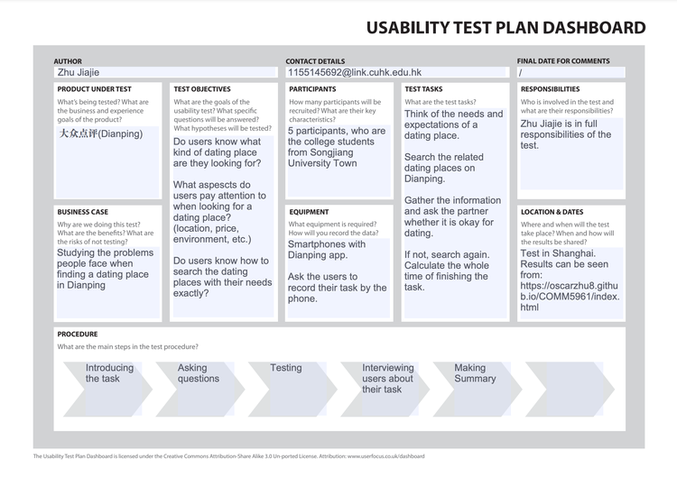

Problem Statement
Persona
The target users of this project are the college students who studied in Shanghai aging for 18-24, who are looking for a place to date with their boyfriend or girlfriend. The aim is to give them suggestions on quickly finding a favorable place that they can enjoy dating, which fulfills their needs like finding a good environment or going to a symbolic tourist attraction of the city. All the recommended dating places are based on the real experience of the designer and his friend, who have spent many years living in Shanghai.
Pain Points
1. On the current platforms, users are aimless in finding a dating place with specific preference.
When we type “dating”(约会) in Dianping, numerous places will come out without a clear focus. In order words, the current platform is not well-structured in categorizing the dating places, whether it is a place with good environment, whether it is place for playing, or whether it is a place for taking photos, etc. As the relaxed time for the college students are limited, they do not have much time to go to all the places, but to go to the most well-known places in Shanghai instead.
2. The information is not enough to meet the users’ specific needs.
Dianping only provides users with some basic information of the places. As for college students, their expenditure are not the same with adults, so that some of the places are not proper for them, while Dianping does not have a function especially serving for the people from this age cohort. For college students, they should take many things into consideration, such as whether the transportation is convenient, whether it is affordable, whether it is suitable for the young and so on.
Needs and Objectives
Save the time for users to choose a dating place. The objective is to select 100 dating places for the college students, with providing them a thorough and well-structured information for them. What’s more, another function is that user can select different views to see the places, according to the category, the prices, the approximate time for playing and so on.
Users can also leave comment on the different dating places like Dianping, so as to offer more suggestions for the future users.
Usability Test Plan Dashboard
{kind=link}
Results and Conclusion
In the test, five participants were asked to take the following steps to finish the task: 1) think about their fundamental needs for the dating place and what is the most important aspect; 2) search the related dating places on Dianping to find one ideal place; 3) gather the information and ask their partners whether the place is okay for dating. If not, repeat the task until one place is found.
The brief introduction of the 5 participants(all have boyfriend or girlfriend), number A, B, C, D, E, are: A, a freshman, who just began his college life; B, a sophomore, who usually plays outside with her boyfriend; C, a junior, who is preparing for the various tests; D, a senior, who is interning without much study burden; and E, a postgraduate student who is taking online courses via zoom. All of them has used Dianping before.
The basic needs that the five participants mentioned most are the popularity of the dating place, price, location, environment and so on. Afterwards, they search “dating”(约会) in Dianping to look for the detailed information. The common feedbacks of the participants are: there are so many places come out, most of them are just some restaurants, but not the symbolic places of the city. They can successfully get the information of average price and location, but some specific needs can not be fulfilled. What’s more, while checking with their partner, they found difficulties in answering some questions raised by their boyfriend or girlfriend, such as how many times will we spent on this place, whether the place is crowd, or whether the place is quiet or not. Therefore, the participants should view more comments or telephone the places for further information, while some of the places do not have a phone call, such as the Nanjing Road Pedestrian Street. The respective times for participants to finish the task are: A 23 minutes, B 25 minutes, C 16 minutes, D 24 minutes and E 19 minutes. We can see the time users spent on Dianping is quite long, which may not be suitable for college students who are busy.
During the interview of the test, the five participants are all expecting a platform to show all the suitable places for dating that are elaborately chosen, with clear categories, and has more functions and information to save their time searching.